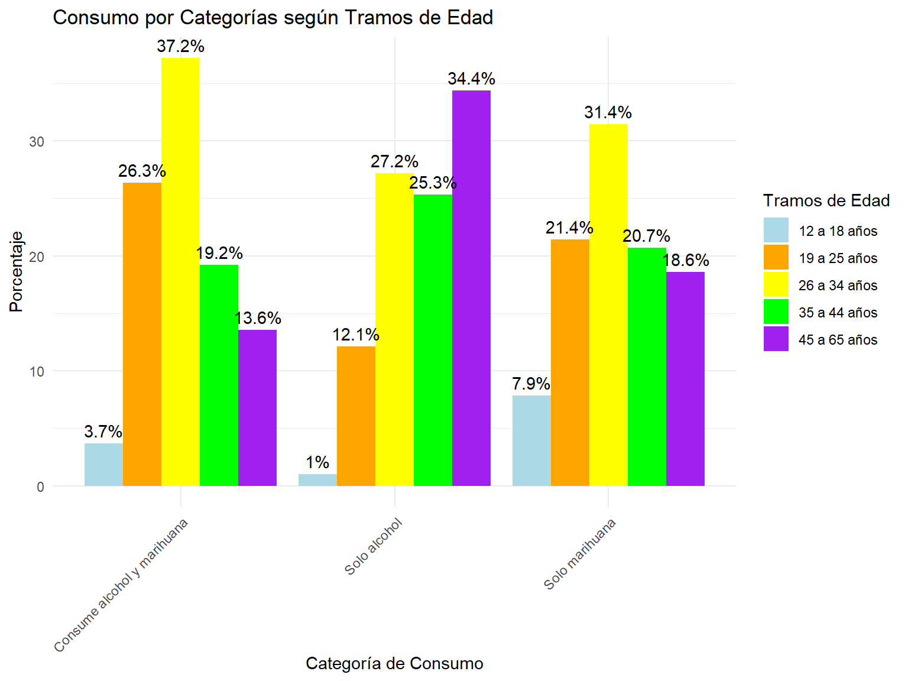

Patrones latentes de consumo en personas que declaran haber consumido alcohol y marihuana en le último año en la ENPG 2022
Informe
Autores/as
Ariel Álvarez
Natalia Vacas González
Fecha de publicación
24 de enero de 2025
1 Antecedentes contextuales:
El alcohol y la marihuna son dos de las drogas más consumidas a nivel nacional y regional, en Chile.
En el último Estudio Nacional de Dogras en Población General (ENPG) en Chile, la prevalencia del consumo de alcohol en el último año alcanza un 53,6%. Mientras que la proporción de personas usuarias de marihuna en el último año es del 10,9% (Prevención y Rehabilitación del Consumo de Drogas y Alcohol (SENDA) 2024).
Así mismo, en la ENPG 2022 se destacan dos aspectos funamentales:
La tendencia a la baja en la prevalencia del consumo de alcohol (-4,9%) y del consumo de marihuna (-0,5%) en el último año, respecto a 2020.
La tendencia al alza en la percepción de riesgo asociada al uso de alcohol y marihuna (entre otras substancias).
Teniendo en cuenta este escenario general, el presente proyecto se enfoca en las personas que declaran haber consumido alcohol y/o marihuna en el último año y en su percepción de riesgo y acceso a ambas substancias.
A continuación, se presenta el objetivo general y los objetivos específicos del caso.
2 Objetivo:
2.1 Objetivo General:
Identificar patrones latentes de consumo, percepción de riego, opinión pública y conductas de riesgo en la conducción en personas que declaran haber consumido alcohol y marihuna en el último año usando datos del Estudio Nacional de Drogas en Población General de Chile 2022.
2.2 Obetivos específicos:
Examinar las caracterísiticas sociodemográficas y la distribución espacial de las personas que declaran haber consumido alcohol y/ o marihuana en el último año, asi como de otras variables críticas relacionadas con la percepción de riesgo, la opinión pública y conductas de riesgo en la conducción.
Identificar variables relavantes para la elboración de grupos o perfiles de personas que declaran haber consumido alcohol y/ o marihuana en el último año a través de la extracción de características, aplicando el análisis de componentes principales (PCA)
Contrastar el desempeño de distintos algoritmos de clustering (particional y jerárquico aglomerativo) con respecto a su capacidad de generar grupos o perfiles bien definidos de personas que declaran haber consumido alcohol y/o marihuna.
3 Relevancia del caso de estudio:
El consumo extendido de susbtancias psicoactivas, tales como el alcohol y la marihuna, constituye un problema de salud pública con consecuencias tanto en el sistema asistencial, como en la productividad a lo largo de la vida, el entorno social y familiar y la salud de las personas usuarias de este tipo de substancias (Altamirano Altamirano, Catalán Sandoval, y González Sepúlveda 2024)
El informe “El Consumo de Alcohol en Chile: Situación Epidemiológica” (Prevención y Rehabilitación del Consumo de Drogas y Alcohol (SENDA) 2024) destaca el consumo de alcohol como principal factor de riesgo que causa muerte y discapacidad en Chile, representando el 12,4% de los años de vida saludables perdidos por muerte o discapacidad (AVISA). Junto a lo anterior, también se señala la dependencia del alcohol como una de las cuatro principales enfermedades que generan carga de enfermedad en el país, explicando un 7,7% de los AVISA perdidos.
Adicionalmente, el informe “Marihuana” (Prevención y Rehabilitación del Consumo de Drogas y Alcohol (SENDA) 2020) donde se destaca que Alrededor del 9% de los consumidores adultos desarrollan adicción a la marihuana. Este porcentaje aumenta al 17% si el consumo comienza en la adolescencia y al 25-50% en consumidores diarios. Además de los efectos adictivos, SENDA señala los efectos sobre la salud respiratoria, el incremento del riesgo de psicosis y el deficit cognitivo (particularmente en adolescentes), el desempeño académico y laboral, en términos de ausentismo y menor productividad y los riesgos cariovasculares.
En función de estos antecedentes, se vuelve relevante trazar una estrategia para la identificación de patrones latentes de consumo, percepción de riego y acceso, en personas usuarias de alcohol y marihuana en miras a:
Diseñar políticas y estrategias de intervención más específicas y efectivas para la población consumidora.
Priorizar recursos hacia grupos de mayor riesgo.
Promover una comprensión más matizada del consumo de estas substancias psicoactivas.
4 Selección de bases de datos y variables de trabajo:
Inicialmente, se trabajó con un conjunto de bases de datos procedentes del Estudio Nacional de Drogas en Población General (ENPG 2022). No obstante, habiendo trabajado el objetivo de unión de bases de datos mediante la fundión fulljoint, se constató la perdida de un número de casos relevantes que respondían a la categoría consumo de marihuna, dentro de la variable consumo en el último año. Por ello se decidió trabajar con la base original del ENPG 2022.
Inicialmente utilizamos los archivos de SENDA de una selección previa, una selección sobre datos y opinión pública. Por temas de análisis y en función de la metadología, utilizaremos la base completa para tener la selección completa de variables de la encuesta. Esta selección se realizó de manera anexa y por motivos de espacio en nuestro repositario fue subida la base ya seleccionada.
La base de datos fue manipulada para dejar los valores perdidos, valores NS/NR como NA en facilidad de los posteriores análisis. También se generaron variables de interés para identificar patrones de consumo en la muestra. Además, se seleccionaron tipos de consumo en especificos de Alcohol, Marihuana y variables sociodemograficas.
Código
# Basesenda <-import("https://raw.githubusercontent.com/nvacasgonzalez/proyecto_capstone_AA_NV/main/data/senda.xlsx")senda <- senda %>%rename_with(tolower) senda_exp1 <-svydesign(ids =~1, data = senda, weights =~factor_expansion)senda_exp <-svydesign(id=~1, strata=~upm, weights =~factor_expansion, data=senda)# Creación de variable de consumo#alcohol anosenda$oh_ano <-NAsenda$oh_ano <-ifelse( senda$oh_1 ==1,ifelse(senda$oh_4 %in%c(1, 2), 1,ifelse(senda$oh_4 %in%c(3, 88, 99), 0, NA)),NA)# marihuana anosenda$mar_ano <-NAsenda$mar_ano <-ifelse( senda$mar_1 ==1,ifelse(senda$mar_4 %in%c(1, 2), 1,ifelse(senda$mar_4 %in%c(3, 88, 99), 0, NA)),NA)senda <- senda %>%mutate(consumo =case_when( oh_ano ==1& mar_ano ==1~1, # Personas que consumen alcohol y marihuana oh_ano ==1& mar_ano ==0~2, # Personas que consume solo alcohol oh_ano ==0& mar_ano ==1~3, # Personas que consume solo marihuana ))senda$consumo <-factor(senda$consumo, levels =c("1", "2", "3"), labels =c("Consume alcohol y marihuana", "Solo alcohol", "Solo marihuana"))
6 Datos descriptivos y Cruce de variables
Nuestra variable de interés fue generada a apartir de personas que afirmaron haber consumido alguna vez en su vida alcohol y/o marihuana (oh_1 y mar_1). Apartir de esto, se creó una variable para identificar a quienes consumen solo alcohol, solo marihuana y quienes consumen de ambos durante el último año (oh_4 y mar_4).
De esto, se identifica que el 64% de las personas consume solo alcohol, un 4% solo marihuana y un 32% consume alcohol y marihuana.
Código
tabla_consumo <- senda %>%filter(!is.na(consumo)) %>%# Excluir valores NAcount(consumo) %>%mutate(Porcentaje =round(n /sum(n) *100, 1))# Mostrar la tablatabla_consumo %>%rename("Tipo de Consumo"="consumo", # Renombrar la columnas"Número de observaciones"="n", "Porcentaje"="Porcentaje" ) %>%kable("html", caption ="Tabla de tipo de conusmo") %>%kable_styling("striped", full_width = F) %>%kable_styling(font_size =15) %>%add_header_above(c(" "=1, "Porcentajes"=ncol(tabla_consumo) -1)) # Encabezado
Tabla de tipo de conusmo
Porcentajes
Tipo de Consumo
Número de observaciones
Porcentaje
Consume alcohol y marihuana
1223
32.3
Solo alcohol
2424
64.0
Solo marihuana
140
3.7
A raíz de esto de analizaron variables sociodemograficas cruzadas sobre el tipo de consumo. Las variables sociodemográficas fueron sexo, edad, niveles de educación y tramos de ingreso. También otras variables como percepción de riesgo, accesibildiad y consumo en conducción.
6.1 Cruce de Sexo con consumo
Los datos descriptivos de la base nos muestra que en promedio hay más mujeres que hombres y que sobre el tipo de consumo se identifica que: Sobre consumos de ambos alcohol y marihuana, los hombres consumen más que las mujeres (63% y 37% respectivamente). Sobre solo un tipo de consumo los valores se invierten, los hombres consumen en medida más solo alcohol, mientras que las mujeres consumen en medida solo marihuana.
Código
tabla_porcentajes_sexo <- senda %>%filter(!is.na(consumo) &!is.na(sexo)) %>%# Valores NAmutate(sexo =recode(sexo, `1`="Hombre", `2`="Mujer")) %>%# Etiquetas de Vargroup_by(sexo, consumo) %>%# Agrupación por varsummarise(Frecuencia =n(), .groups ="drop") %>%# Frecuenciagroup_by(consumo) %>%# Porcentajemutate(Porcentaje =round(Frecuencia /sum(Frecuencia) *100, 1)) %>%select(-Frecuencia) %>%# Eliminar la columna de Frecuenciapivot_wider(names_from = consumo, # Convertir "consumo" en columnasvalues_from = Porcentaje, # Usar solo la columna Porcentajenames_glue ="Porcentaje_{consumo}") %>%ungroup()# Mostrar la tablatabla_porcentajes_sexo %>%rename("Sexo"="sexo", # Renombrar la columnas"Consume Alcohol y Marihuana"="Porcentaje_Consume alcohol y marihuana", "Solo Alcohol"="Porcentaje_Solo alcohol", "Solo Marihuana"="Porcentaje_Solo marihuana" ) %>%kable("html", caption ="Tabla de Porcentajes por NSE y Consumo") %>%kable_styling("striped", full_width = F) %>%kable_styling(font_size =15) %>%add_header_above(c(" "=1, "Porcentajes"=ncol(tabla_porcentajes_sexo) -1)) # Encabezado
Tabla de Porcentajes por NSE y Consumo
Porcentajes
Sexo
Consume Alcohol y Marihuana
Solo Alcohol
Solo Marihuana
Hombre
62.6
52.3
49.3
Mujer
37.4
47.7
50.7
6.2 Cruce de Edad con consumo
La variable de edad en pro de temas de análisis fue agrupada en Tramos de edad en base a información del informe oficial de la Encuesta Nacional de Drogas 2022. Los datos iniciales descriptivos de Edad nos muestra que la media de edad de la encuesta son 42 años, una desviación estándar de 15,24 ampliandose relativamente alrededor de la media, y una skew de -0,11 lo que significa que hay un leve sesgo hacia edades más jovenes.
En cuanto al tipo de consumo: Los tramos de edad que consumen más alcohol y marihuana son las personas de 26 a 34 años con un 37%, mientras quienes menos consumen ambos son personas de 12 a 18 años con un 4%. Esto tiene sentido debido a las leyes en Chile donde está prohibido que menores consuman algún tipo de droga. En cuanto a personas que consumen solo alcohol son las personas mayores de 45 a 65 años con un 34%, mientras que los tramos edad que consumen solo marihuana son las personas de 26 a 34 años con un 31%
Código
senda <- senda %>%mutate(tramos_edad =case_when( edad >=12& edad <=18~"12 a 18 años", edad >=19& edad <=25~"19 a 25 años", edad >=26& edad <=34~"26 a 34 años", edad >=35& edad <=44~"35 a 44 años", edad >=45& edad <=65~"45 a 65 años" ))tabla_porcentajes_edad <- senda %>%filter(!is.na(consumo) &!is.na(tramos_edad)) %>%# Valores NAgroup_by(tramos_edad, consumo) %>%# Agrupación por varsummarise(Frecuencia =n(), .groups ="drop") %>%# Frecuenciagroup_by(consumo) %>%# Porcentajemutate(Porcentaje =round(Frecuencia /sum(Frecuencia) *100, 1)) %>%select(-Frecuencia) %>%# Eliminar la columna de Frecuenciapivot_wider(names_from = consumo, # Convertir "consumo" en columnasvalues_from = Porcentaje, # Usar solo la columna Porcentajenames_glue ="Porcentaje_{consumo}") %>%ungroup()# Mostrar la tablatabla_porcentajes_edad %>%rename("Tramos de edad"="tramos_edad", # Renombrar la columnas"Consume Alcohol y Marihuana"="Porcentaje_Consume alcohol y marihuana", "Solo Alcohol"="Porcentaje_Solo alcohol", "Solo Marihuana"="Porcentaje_Solo marihuana" ) %>%kable("html", caption ="Tabla de Porcentajes por Edad y Consumo") %>%kable_styling("striped", full_width = F) %>%kable_styling(font_size =15) %>%add_header_above(c(" "=1, "Porcentajes"=ncol(tabla_porcentajes_edad) -1)) # Encabezado
Tabla de Porcentajes por Edad y Consumo
Porcentajes
Tramos de edad
Consume Alcohol y Marihuana
Solo Alcohol
Solo Marihuana
12 a 18 años
3.7
1.0
7.9
19 a 25 años
26.3
12.1
21.4
26 a 34 años
37.2
27.2
31.4
35 a 44 años
19.2
25.3
20.7
45 a 65 años
13.6
34.4
18.6
6.3 Cruce de Nivel educacional con consumo
Sobre el nivel educacional y el consumo de Alcohol y Marihuana hemos observado patrones bastantes llamativos sobre el nivel educacional. La variable original DP_12 fue recodificada y agrupada en grupos para facilitar el análisis, siendo codificadas en grupos de “Sin educación”, “sistema antiguo” y educación básica, media, técnica, universitaria y postgrados.
Estos resultados si bien pueden no ser tan representativos debido al número de casos que compone cada grupo, siendo los niveles de mayor educación los grupos con menor casos, mientras que niveles básicos y medios contemplan una mayor cantidad de personas.
Las personas que consumen en mayor medida alcohol y marihuana son las personas con un nivel educacional media con un 35%, mientras quienes menos consumen ambos tipos son las personas sin educación con 0,1%. Sobre los grupos que consumen mayor alcohol son nuevamente personas con educación media con un 37%, y personas que consumen solo marihuana sigue la misma tendencia de educación con 39%.
Código
senda <- senda %>%mutate(educ =case_when( dp_12 ==1~"Sin educación", dp_12 %in%c(3, 5, 7) ~"Sistema antiguo", dp_12 ==4~"Educación básica", dp_12 %in%c(6, 8) ~"Educación media", dp_12 ==9~"Técnico", dp_12 ==10~"Universitaria", dp_12 %in%11:13~"Postgrado" )) %>%arrange(desc(educ))tabla_porcentajes_educ <- senda %>%filter(!is.na(consumo) &!is.na(educ)) %>%# Valores NAgroup_by(educ, consumo) %>%# Agrupación por varsummarise(Frecuencia =n(), .groups ="drop") %>%# Frecuenciagroup_by(consumo) %>%# Porcentajemutate(Porcentaje =round(Frecuencia /sum(Frecuencia) *100, 1)) %>%select(-Frecuencia) %>%# Eliminar la columna de Frecuenciapivot_wider(names_from = consumo, # Convertir "consumo" en columnasvalues_from = Porcentaje, # Usar solo la columna Porcentajenames_glue ="Porcentaje_{consumo}") %>%ungroup()# Mostrar la tablatabla_porcentajes_educ %>%rename("Nivel educacional"="educ", # Renombrar la columna 'nse' a 'NSE'"Consume Alcohol y Marihuana"="Porcentaje_Consume alcohol y marihuana", "Solo Alcohol"="Porcentaje_Solo alcohol", "Solo Marihuana"="Porcentaje_Solo marihuana" ) %>%kable("html", caption ="Tabla de Porcentajes por NSE y Consumo") %>%kable_styling("striped", full_width = F) %>%kable_styling(font_size =15) %>%add_header_above(c(" "=1, "Porcentajes"=ncol(tabla_porcentajes_educ) -1)) # Encabezado
Tabla de Porcentajes por NSE y Consumo
Porcentajes
Nivel educacional
Consume Alcohol y Marihuana
Solo Alcohol
Solo Marihuana
Educación básica
6.6
5.8
11.4
Educación media
35.0
36.8
38.6
Postgrado
3.0
4.3
3.6
Sin educación
0.1
NA
0.7
Sistema antiguo
4.1
4.5
5.0
Técnico
17.4
17.4
15.0
Universitaria
33.9
31.2
25.7
6.4 Cruce de Ingreso con consumo
Observando los datos según tramos de ingresos, estos fueron agrupados en nivel socioeconomicos bajo, medio y alto. El informe de SENDA (2022) categoriza el nivel socioeconomico en a la calidad de la vivienda y el barrio. En nuestra investigación la justificación de variable de nivel socioeconomica será en base al tramo de ingresos que se encuetra la persona de la variable (DP_16).
Sobre los grupos socioeconomicos que consumen ambos tipos son en mayor medida las personas de nivel socioeconómico medio 45%, y que también son quienes más consumen solo alcohol 47%. Respecto al consumo de solo marihuana son las personas de nivel socioeconómico bajo quienes más consumen con un 49%.
Código
senda <- senda %>%mutate(nse =case_when( dp_16 %in%1:5~"Nivel socioeconomico Bajo", dp_16 %in%6:8~"Nivel socioeconomico Medio", dp_16 %in%9:10~"Nivel socioeconomico Alto" ))tabla_porcentajes_nse <- senda %>%filter(!is.na(consumo) &!is.na(nse)) %>%# Valores NAgroup_by(nse, consumo) %>%# Agrupación por varsummarise(Frecuencia =n(), .groups ="drop") %>%# Frecuenciagroup_by(consumo) %>%# Porcentajemutate(Porcentaje =round(Frecuencia /sum(Frecuencia) *100, 1)) %>%select(-Frecuencia) %>%# Eliminar la columna de Frecuenciapivot_wider(names_from = consumo, # Convertir "consumo" en columnasvalues_from = Porcentaje, # Usar solo la columna Porcentajenames_glue ="Porcentaje_{consumo}") %>%ungroup() tabla_porcentajes_nse %>%rename("NSE"="nse", # Renombrar la columna 'nse' a 'NSE'"Consume Alcohol y Marihuana"="Porcentaje_Consume alcohol y marihuana", "Solo Alcohol"="Porcentaje_Solo alcohol", "Solo Marihuana"="Porcentaje_Solo marihuana" ) %>%kable("html", caption ="Tabla de Porcentajes por NSE y Consumo") %>%kable_styling("striped", full_width = F) %>%kable_styling(font_size =15) %>%add_header_above(c(" "=1, "Porcentajes"=ncol(tabla_porcentajes_nse) -1)) # Encabezado
Tabla de Porcentajes por NSE y Consumo
Porcentajes
NSE
Consume Alcohol y Marihuana
Solo Alcohol
Solo Marihuana
Nivel socioeconomico Alto
12.4
15.5
9.9
Nivel socioeconomico Bajo
42.3
37.8
48.6
Nivel socioeconomico Medio
45.3
46.7
41.4
7 Gráficos
7.1 Gráfico de Sexo
En este apartado se presentan visualización sobre nuestros datos de interés y los cruces sociodemográficos.
En cuanto a la variable sexo, los hombres lideran el consumo en las tres categorías, consumo de alcohol y marihuana, consumo exclusivo de alcohol y consumo exclusivo de marihuana. Sin embargo, en la categoría de consumo simultaneo de alcohol y marihuana, existe mayor disparidad en la composición por sexo; el consumo de ambas substancias está más presente en hombres (61,3%) que en mujeres (38,7%).
Sin embargo, en la categoría de consumo exclusivo de alcohol, el consumo de mujeres (48,3%) y hombres (51,7%) se encuentra más cercano.
Respecto al consumo de alcohol y marihuana en relación a los tramos etarios es posible realizar el segundo desglose según substancia: - Consumo simultaneo de alcohol y marihuana: la mayor prevalencia de este tipo de consumo se da en las personas con edades comprendidas entre 26 y 34 años (38,4%), seguidas de aquellas entre 19 y 25 años (25,1%) - Consumo exclusivo de alcohol: este tipo de consumo es más prevalente en personas entre los 45 y 65 años (34,2%) - Consumo exclusivo de marihuana: si bien los porcentajes de prevalencia de este tipo de consumo por cohorte etaria no son tan dispares, el grupo etario que muestra mayor consumo exclusivo de marihuana es el conformado por personas entre 35 y 44 años (28,2%). Junto a lo anterior, llama particularmente la atención la prevalencia del consumo de marihuana en menores de edad (9,9% del total de la composición etaria de este grupo de personas consumidoras)
Código
# Gráfico N°2senda_porcentaje_edad <- senda %>%filter(!is.na(tramos_edad)) %>%group_by(consumo, tramos_edad) %>%summarise(N =n(), .groups ="drop") %>%group_by(consumo) %>%mutate(porcentaje = N /sum(N) *100) grafico_2 <-ggplot(senda_porcentaje_edad, aes(x = consumo, y = porcentaje, fill = tramos_edad)) +geom_bar(stat ="identity", position ="dodge") +geom_text(aes(label =paste0(round(porcentaje, 1), "%")),position =position_dodge(width =0.9),vjust =-0.5 ) +scale_fill_manual(values =c("12 a 18 años"="lightblue", "19 a 25 años"="orange", "26 a 34 años"="yellow", "35 a 44 años"="green", "45 a 65 años"="purple")) +labs(title ="Consumo por Categorías según Tramos de Edad",x ="Categoría de Consumo",y ="Porcentaje",fill ="Tramos de Edad" ) +theme_minimal() +theme(axis.text.x =element_text(angle =45, hjust =1))grafico_2
7.3 Gráfico de Ingreso
Por último, en relación a la frecuencia relativa de consumo de alcohol y/o marihuana según nivel socioeconómico, caben destacar los siguientes hallazgos. (1) La personas que pertenecen al nivel socioeconómico medio y bajo poseen prevalencias de consumo simultaneo similares, con un 43,9% y un 42,1% respectivamente. (2) En el consumo exclusivo de alcohol predomina el grupo socioeconómico medio (46,9%), mientras que cuando se trata de consumo exclusivo de marihuana la mayor frecuencia se da en el nivel socioeconómico más bajo (49,2%).
Código
# Calcular porcentajes por consumo y nivel socioeconómico, pero sobre el total de consumosenda_porcentaje_nse <- senda %>%filter(!is.na(nse)) %>%# Eliminar filas donde nse es NAgroup_by(consumo, nse) %>%summarise(N =n(), .groups ="drop") %>%group_by(consumo) %>%# Agrupar por consumo para calcular el porcentaje sobre cada consumomutate(porcentaje = N /sum(N) *100) # Calcular el porcentaje sobre el total de cada consumo# Gráficografico_3 <-ggplot(senda_porcentaje_nse, aes(x = consumo, y = porcentaje, fill = nse)) +geom_bar(stat ="identity", position ="dodge") +geom_text(aes(label =paste0(round(porcentaje, 1), "%")),position =position_dodge(width =0.9),vjust =-0.5 ) +scale_fill_manual(values =c("Nivel socioeconomico Bajo"="lightblue", "Nivel socioeconomico Medio"="orange", "Nivel socioeconomico Alto"="green")) +# Colores personalizadoslabs(title ="Consumo por Categorías según Nivel Socioeconómico",x ="Categoría de Consumo",y ="Porcentaje",fill ="Nivel Socioeconómico" ) +theme_minimal() +theme(axis.text.x =element_text(angle =45, hjust =1))grafico_3

8 Preparación de variables para modelo de Machine Learning
Otras variables de interés para generar posibles clusters son: Percepción de riesgo, accesibilidad y conducción y tratamiento. Estas variables fueron seleccionadas solo las que hacen referencia sea a alcohol o marihuana, ya que existen otras categorías sobre otros tipos de droga.
Las variables fueron recodificadas de variables categoricas a variables binarias para faciltiar el análsis. Estas recodificaciones fueron hechas en base a la presentación de resultados de SENDA (2022).
8.1 Percepción de Riesgo
Dentro de estas variables se encuentra la percepción de riesgo de consumir ciertos tipos de drogas o la frecuencia de consumo de estos. Para esta variable se transformo de una variable categorica (4 categorías) a una variabla binaria (2 categorías), donde los valores 1,2,3 fueron catalogados como “Ningún o algo de riesgo”, mientras que el valor 4 fue catalago como “Gran riesgo”. A partir de esto se identificaron las principales hábitos que pueden tener un gran riesgo de alcohol y marihuana.
Donde consumir más de 5 tragos diarios un 88% cree que es gran riesgo, seguido con consumir marihuana frecuentemente con un 52%. Mientras que tomar tres o más tragos por ocasión un 36% cree que tiene alto riesgo, mientras que consumir marihuana de forma experimental es el menor caso que las personas identifican con alto riesgo con un 21%.
Código
# Datos de percepción senda <- senda %>%mutate(across(starts_with("pr"), ~case_when( . %in%c(1,2,3) ~0, # Valores 1 ningun riesgo se mantiene pero como 0 . %in% (4) ~1, # Valores que identifican algún riesgo se codifican como 1 de algún riesgoTRUE~NA_real_# Valores NA ))) %>%mutate(across(starts_with("pr"), ~factor(., levels =c(0, 1),labels =c("Ningún o algo de riesgo", "Gran riesgo"))))# Filtrar las columnas "pr" con valor "Gran riesgo"tabla_pr_gran_riesgo <- senda %>%select(starts_with("pr")) %>%summarise(across(everything(), ~round(mean(. =="Gran riesgo", na.rm =TRUE) *100, 1))) %>%pivot_longer(cols =everything(),names_to ="Pregunta",values_to ="Porcentaje_Gran_Riesgo" ) %>%arrange(desc(Porcentaje_Gran_Riesgo)) etiquetas_preguntas <-c("pr_1_2_rp"="Tomar más de 3 tragos ocasional","pr_1_3_rp"="Tomar más de 5 tragos diarios","pr_1_4_rp"="Marihuana de forma experimental","pr_1_5_rp"="Fumar marihuana frecuentemente"# Agregar más etiquetas según corresponda)# Reemplazar las etiquetas en la tablatabla_pr_gran_riesgo <- tabla_pr_gran_riesgo %>%mutate(Pregunta =recode(Pregunta, !!!etiquetas_preguntas))# Crear tabla HTML con etiquetas actualizadastabla_pr_gran_riesgo %>%rename("Percepción de riesgo"="Pregunta","Gran riesgo"="Porcentaje_Gran_Riesgo" ) %>%kable("html", caption ="Porcentaje de Gran Riesgo por Pregunta") %>%kable_styling("striped", full_width = F) %>%kable_styling(font_size =15)
Porcentaje de Gran Riesgo por Pregunta
Percepción de riesgo
Gran riesgo
Tomar más de 5 tragos diarios
87.7
Fumar marihuana frecuentemente
52.3
Tomar más de 3 tragos ocasional
36.3
Marihuana de forma experimental
21.0
8.2 Opinión Pública
A los encuestados se le realizaron sobre su nivel de acuerdo en temas de consumo, legalización y penalización de drogas. Para esta variable también fue recodificada de forma binaria para facilitar su análisis. Donde los valores 3 y 4 fueron dejados como No estoy de acuerdo, mientras que valores 1 y 2 fueron catalogados como Estoy de acuerdo. Es esta tabla se presentan donde hay mayores niveles de acuerdo según diversos temas:
Por ejemplo un 95% de los encuestados está de de acuerdo con que la marihuana pueda ser usada con fines terapeuticos. Pero también un gran porcentaje (88%) está de acuerdo con que las drogas han hecho más violentos a los jóvenes, siguiendo en tendencia con el 77% que cree que el tráfico de drogas y el consumo son el principal responasble de la delincuencia en el país. Si bien en estas preguntas se contempla todo el abanico de drogas es interesante observar como si bien se aceptan ciertas conductas también se recrimina el uso ilegalizado que fomenta la violencia y delincuencia.
Por tanto, existe una mayor concenso que hay drogas principalmente dañinas, no así tanto el uso de marihuana. Donde si bien un 82% está de acuerdo que gran mayoría de los jóvenes consume marihuana (82%), están de acuerdo que debería ser legal para mayores de edad (69%) y que además produce menos daño que el alcohol (62%).
Asímismo, existe un menor consenso sobre la penalización de la marihuana a diferencia de otras drogas. Un 49% Está de acuerdo con que se le de la misma pena a quienes trafican marihuana con personas que trafican cocaína o pasta base. Mientras que el 38% está de acuerdo en penalizar el porte y consumo de marihuana aunque sea en pequeñas cantidades.
Código
# Datos de opinión públicasenda <- senda %>%mutate(across(starts_with("op"), ~case_when( . %in%c(1, 2) ~1, # Valores 1 y 2 se recodifican como 1 . %in%c(3, 4) ~0, # Valores 3 y 4 se recodifican como 0TRUE~NA_real_ ))) %>%mutate(across(starts_with("op"), ~factor(., levels =c(1, 0),labels =c("Estoy de acuerdo", "No estoy de acuerdo"))))# Selección de Alcohol y Marihuana, y otrostabla_op_opinion <- senda %>%select(op_1_1_rp, op_1_2_rp, op_1_4_rp, op_2_2_rp, op_2_3_rp, op_2_5_rp ) %>%summarise(across(everything(), ~round(mean(. =="Estoy de acuerdo", na.rm =TRUE) *100, 1))) %>%pivot_longer(cols =everything(),names_to ="Pregunta",values_to ="Porcentaje_Acuerdo") %>%arrange(desc(Porcentaje_Acuerdo)) etiquetas_preguntas_op <-c("op_1_1_rp"="La mayoría de jóvenes consume Marihuana","op_1_2_rp"="La Marihuana produce menos daño que el Alcohol","op_1_4_rp"="La Marihuana debería ser legal para mayores de 18 años","op_2_2_rp"="Dar la misma pena a quienes trafican Marihuana como los que trafican cocaína o pasta base","op_2_3_rp"="Permitir el uso de Marihuana para fines terapéuticos","op_2_5_rp"="Penalizar el porte y consumo de marihuana aunque sea en pequeñas cantidades y para uso personal")# Borrar quizás la penalización de mar # Reemplazar las etiquetas en la tablatabla_op_opinion <- tabla_op_opinion %>%mutate(Pregunta =recode(Pregunta, !!!etiquetas_preguntas_op))# Crear tabla HTML con etiquetastabla_op_opinion %>%rename("Pregunta"="Pregunta","Porcentaje de Acuerdo"="Porcentaje_Acuerdo" ) %>%kable("html", caption ="Porcentaje de Acuerdo por Pregunta") %>%kable_styling("striped", full_width = F) %>%kable_styling(font_size =15)
Porcentaje de Acuerdo por Pregunta
Pregunta
Porcentaje de Acuerdo
Permitir el uso de Marihuana para fines terapéuticos
95.0
La mayoría de jóvenes consume Marihuana
82.3
La Marihuana debería ser legal para mayores de 18 años
69.3
La Marihuana produce menos daño que el Alcohol
61.8
Dar la misma pena a quienes trafican Marihuana como los que trafican cocaína o pasta base
49.6
Penalizar el porte y consumo de marihuana aunque sea en pequeñas cantidades y para uso personal
38.4
8.3 Conducción y tratamiento
En cuanto al consumo de Alcohol y Marihuana y si han manejado bajo alguno de estos efectos. Un 21% de los encuestados afirma haber manejado después de beber alcohol, independiente de la cantidad consumida. Por otro lado, un 10% afirma haber manejado después de consumir marihuana.
Código
# Datos de conducciónsenda <- senda %>%mutate(across(starts_with("cc"), ~factor(.,levels =c(1,2),labels =c("Sí", "No"))))# Tablatabla_cc_conduccion <- senda %>%select(starts_with("cc")) %>%summarise(across(everything(), ~round(mean(. =="Sí", na.rm =TRUE) *100, 1))) %>%pivot_longer(cols =everything(),names_to ="Pregunta",values_to ="Porcentaje_Conduce" ) %>%arrange(desc(Porcentaje_Conduce))# Etiquetasetiquetas_preguntas_cc <-c("cc_2"="Ha manejado despúes de beber Alcohol","cc_3"="Ha manejado después de fumar Marihuana")# Reemplazar las etiquetas en la tablatabla_cc_conduccion <- tabla_cc_conduccion %>%mutate(Pregunta =recode(Pregunta, !!!etiquetas_preguntas_cc))# Crear tabla HTML con etiquetastabla_cc_conduccion %>%rename("Pregunta"="Pregunta","Porcentaje de Sí"="Porcentaje_Conduce" ) %>%kable("html", caption ="Porcentaje conducción") %>%kable_styling("striped", full_width = F) %>%kable_styling(font_size =15)
Altamirano Altamirano, Bárbara Estefanía, Cristopher Eduardo Catalán Sandoval, y Mauricio González Sepúlveda. 2024. «Percepción de riesgo en torno al consumo de alcohol, marihuana y cocaína que tienen estudiantes de educación superior en una universidad pública de la región de los Lagos». LATAM Revista Latinoamericana de Ciencias Sociales y Humanidades 5 (6): 2817-31. https://doi.org/10.56712/latam.v5i6.3207.